Een overzicht van de core mechanics in Starlight Forest
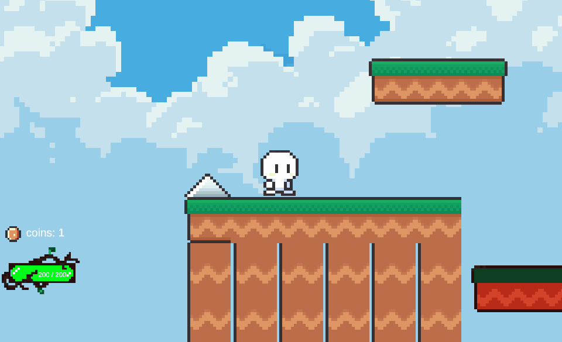
Voor level 1 heb ik een 2D movement systeem ontwikkeld met behulp van Rigidbody2D physics. De speler beweegt horizontaal via input en kan springen met een ground check gebaseerd op Physics2D.OverlapCircle. Daarnaast heb ik een double jump mechaniek toegevoegd via een extraJumpValue. Ik heb bewust gekozen voor een physics-based aanpak in plaats van transform-beweging, zodat botsingen en interacties stabiel en realistisch blijven. Alle belangrijke waarden zoals moveSpeed en jumpForce zijn instelbaar in de Inspector, zodat het systeem flexibel blijft.
private void FixedUpdate()
{
rb.linearVelocity = new Vector2(
MoveInput * moveSpeed,
rb.linearVelocity.y
);
}private void Update()
{
if (isGrounded)
{
extraJumps = extraJumpValue;
}
if (Input.GetKeyDown(keyboardJumpKey) || Input.GetKeyDown(arcadeJumpKey))
{
if (isGrounded || extraJumps > 0)
{
rb.linearVelocity = new Vector2(
rb.linearVelocity.x,
jumpForce
);
if (!isGrounded)
{
extraJumps--;
}
}
}
}
private void FixedUpdate()
{
isGrounded = Physics2D.OverlapCircle(
groundCheck.position,
groundRadius,
groundLayer
);
}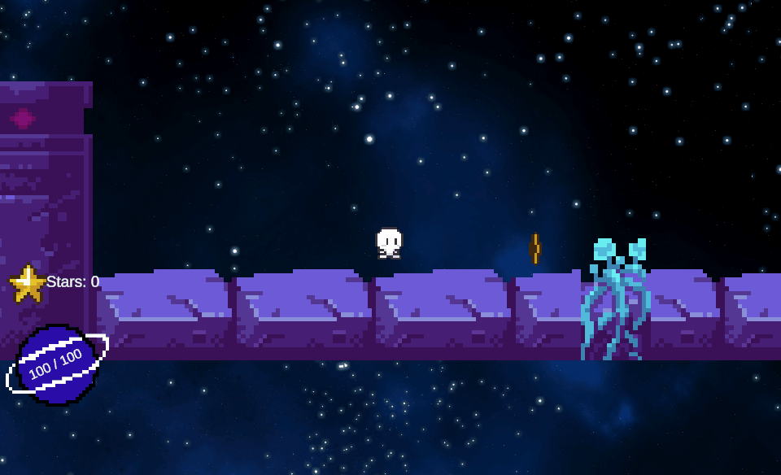
Voor Level 2 heb ik hetzelfde movement- en jumpsysteem hergebruikt als in Level 1. Het belangrijkste verschil is dat ik de Gravity Scale van de Rigidbody2D heb aangepast via de Unity Inspector. Hierdoor blijft de speler langer in de lucht en voelt de beweging lichter en zwevender aan, zonder dat ik de bestaande C#-scripts hoefde aan te passen.
De zwaartekracht is aangepast via de Rigidbody2D-component in de Unity Inspector. De movement- en jumpscripts zijn hergebruikt zonder wijzigingen.
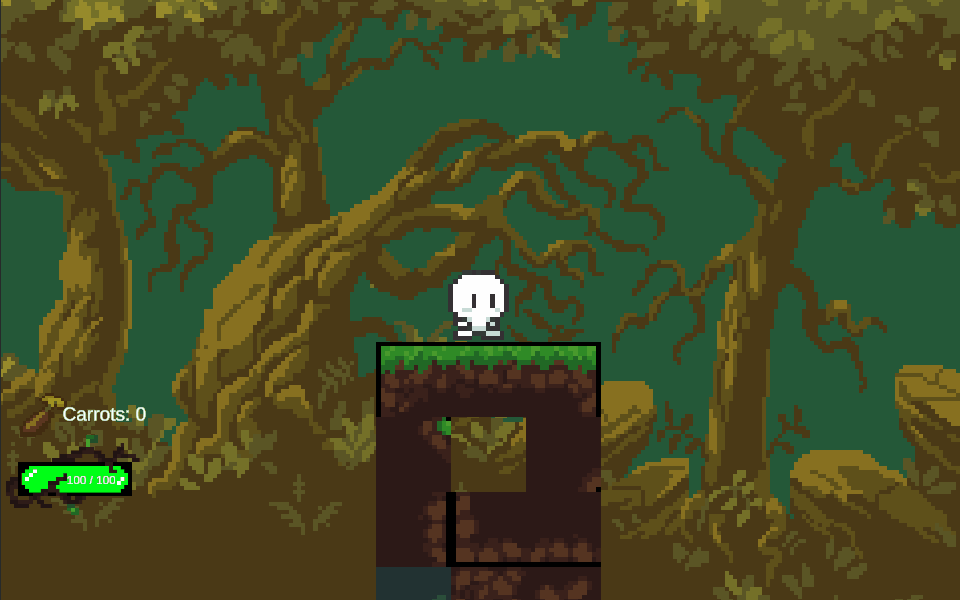
In Level 3 heb ik hetzelfde movement- en jumpsysteem hergebruikt als in de voorgaande levels. Ik heb geen nieuwe aanpassingen aan de scripts gedaan, omdat de bestaande besturing goed werkte voor dit level. Hierdoor blijft de code overzichtelijk en kan ik hetzelfde systeem in meerdere levels gebruiken.
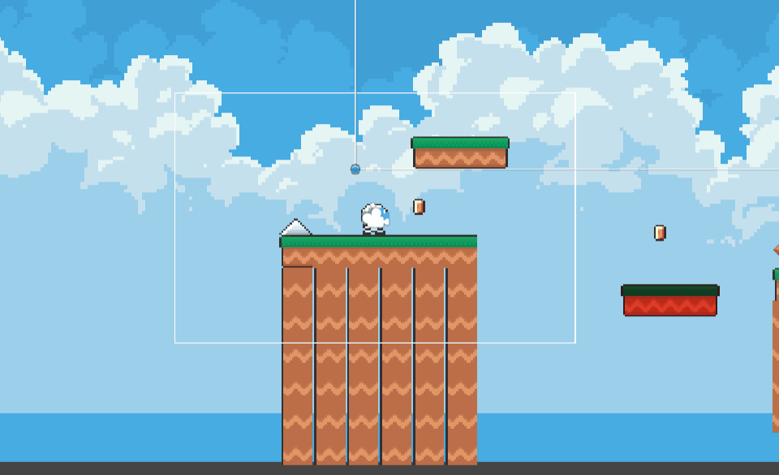
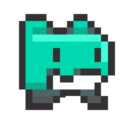
Enemy Behaviour - Level 1Voor Level 1 heb ik een enemy-systeem ontwikkeld waarbij vijanden automatisch tussen verschillende waypoints bewegen. Met Vector2.MoveTowards bewegen de enemies tussen deze punten. Daarnaast heb ik een detectiesysteem toegevoegd dat de afstand tussen de enemy en de speler controleert. Wanneer de speler dichtbij genoeg komt, begint de enemy hem te achtervolgen. Als de speler binnen de attack range komt, wordt de attack-status geactiveerd. Door gebruik te maken van verschillende ranges kan ik eenvoudig bepalen wanneer een enemy patrouilleert, achtervolgt of in de aanvalstatus komt.
protected override void EnemyBehaviour()
{
float distance = Vector2.Distance(
transform.position,
player.position
);
isChasing = false;
isAttacking = false;
if (distance <= attackRange)
{
isChasing = true;
isAttacking = true;
}
else if (distance <= chaseRange)
{
isChasing = true;
Chase();
}
else
{
Patrol();
}
}private void Patrol()
{
if (waypoints.Length < 2) return;
Transform target = waypoints[currentIndex];
transform.position = Vector2.MoveTowards(
transform.position,
target.position,
patrolSpeed * Time.deltaTime
);
if (Vector2.Distance(transform.position, target.position) < 0.05f)
{
if (currentIndex == waypoints.Length - 1)
direction = -1;
else if (currentIndex == 0)
direction = 1;
currentIndex += direction;
}
}
private void Chase()
{
transform.position = Vector2.MoveTowards(
transform.position,
player.position,
chaseSpeed * Time.deltaTime
);
}
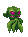
Enemy Behaviour - Level 2In Level 2 heb ik hetzelfde EnemyWalk-script hergebruikt als in Level 1. Het verschil zit in de patrouilleroutes van de enemies. Door de waypoints (lege GameObjects) op andere plekken in de Unity-scene te plaatsen, kan ik bepalen welke route de enemies volgen. Hierdoor krijgen de vijanden een ander bewegingspatroon zonder dat ik de bestaande code hoef aan te passen.
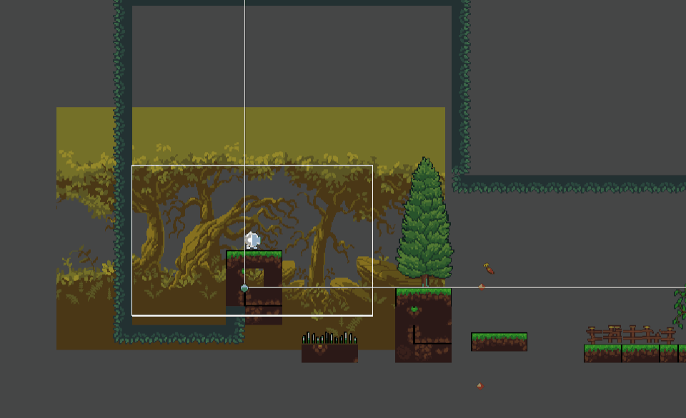
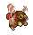
Enemy Behaviour - Level 3Ook in Level 3 heb ik hetzelfde EnemyWalk-script gebruikt. Voor dit level heb ik de waypoints anders geplaatst om de patrouilleroutes aan te passen aan de omgeving. Hierdoor moet de speler beter letten op de bewegingen van de enemies. Het voordeel is dat ik verschillende patrouilleroutes kan maken zonder nieuwe scripts te schrijven.
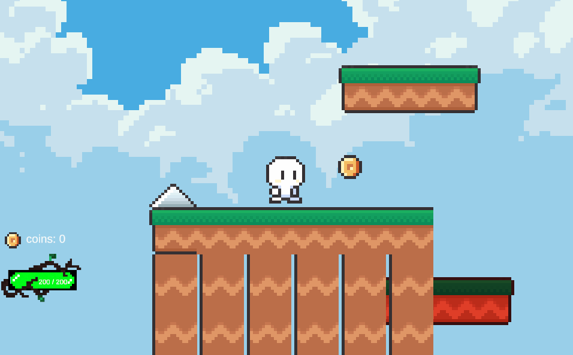
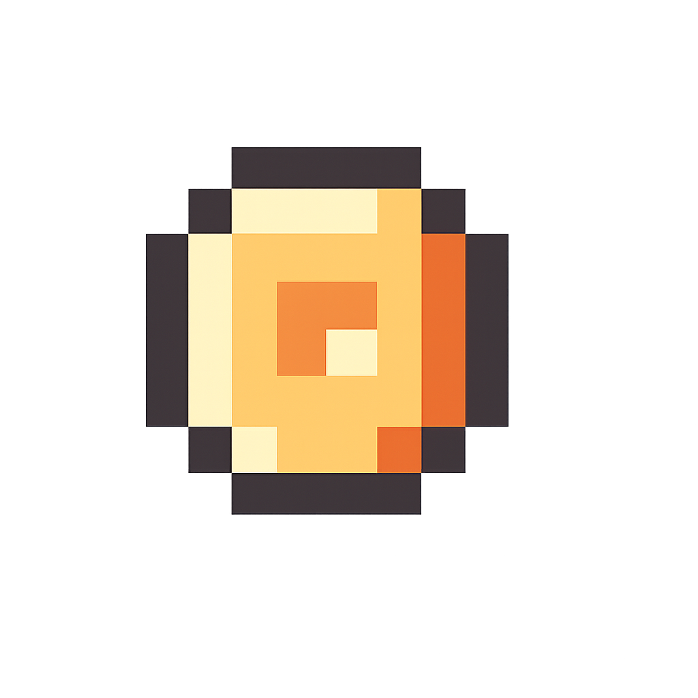
Coins - Level 1Voor Level 1 heb ik een coin-systeem gemaakt waarmee de speler coins kan verzamelen. Met OnTriggerEnter2D controleer ik of de speler een coin raakt. Wanneer dit gebeurt, wordt het aantal coins verhoogd, een geluid afgespeeld en de coin verwijderd. Daarnaast heb ik met TextMeshPro een UI-counter gemaakt die het aantal verzamelde coins op het scherm bijwerkt. Hierdoor kan de speler tijdens het spelen zien hoeveel coins hij heeft verzameld.
private void OnTriggerEnter2D(Collider2D collision)
{
if (collision.CompareTag("Player"))
{
PlayerMovement playerCoin =
collision.GetComponent<PlayerMovement>();
if (playerCoin != null)
{
playerCoin.coins++;
if (AudioManager.audioCurrent != null && coinClip != null)
{
AudioManager.audioCurrent.PlaySound(coinClip);
}
Destroy(gameObject);
}
}
}[SerializeField] private PlayerMovement playerCoin;
[SerializeField] private TextMeshProUGUI coinText;
[SerializeField] private string labelName = "coins";
private void Update()
{
coinText.text = labelName + ": " + playerCoin.coins;
}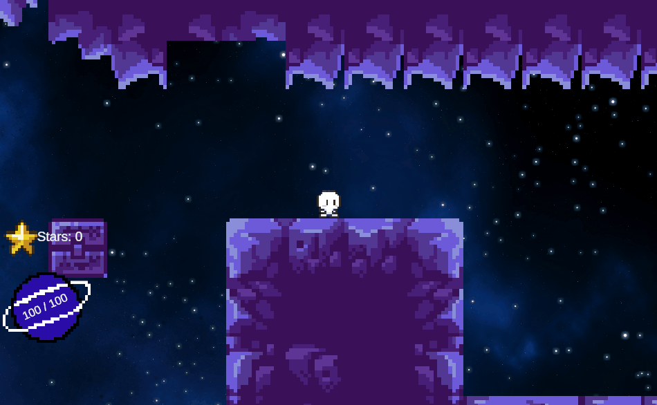
In Level 2 heb ik hetzelfde coin-systeem gebruikt als in Level 1. Alleen de afbeeldingen van de coins zijn aangepast aan het space-thema. De scripts zijn hetzelfde gebleven, waardoor ik het bestaande systeem kon hergebruiken zonder nieuwe code te schrijven.
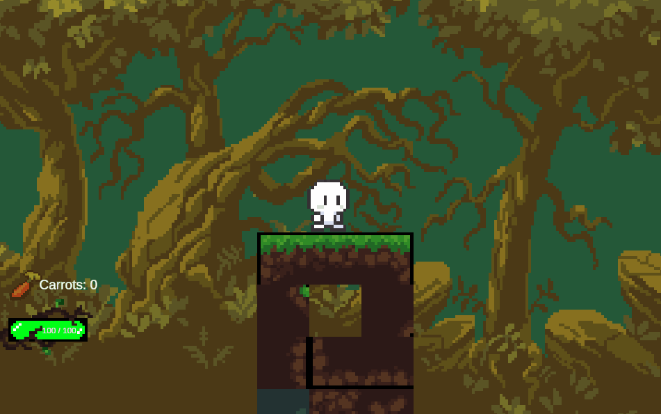
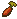
Coins - Level 3In Level 3 heb ik opnieuw hetzelfde coin-systeem gebruikt. Voor dit level heb ik de afbeeldingen vervangen door coins die beter bij de natuurlijke omgeving passen. De werking van het verzamelen en de UI-counter is hetzelfde gebleven.
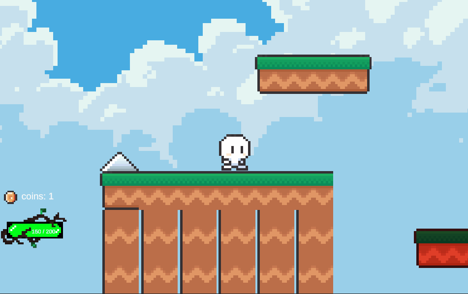
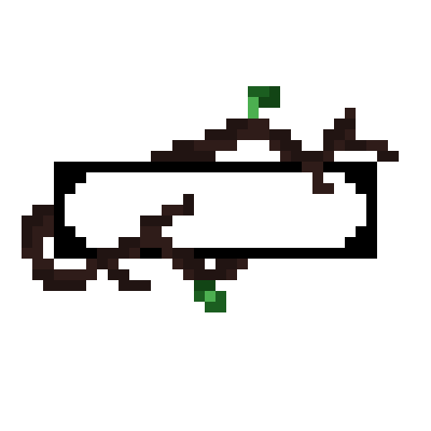
Healthbar - Level 1Voor Level 1 heb ik een health-systeem gemaakt waarmee de speler schade kan krijgen en levens kan verliezen. Met PlayerHealth houd ik bij hoeveel HP de speler heeft. Wanneer de speler schade krijgt, wordt de HP verlaagd. Daarnaast heb ik met Unity UI en TextMeshPro een healthbar gemaakt. De balk wordt aangepast aan de huidige HP en toont hoeveel levens de speler nog over heeft.
private void Start()
{
currentHealth = maxHealth;
healthbar.SetMaxHealth(maxHealth);
}
public void TakeDamage(int amount)
{
if (isDead) return;
if (shieldActive)
amount /= 2;
currentHealth -= amount;
healthbar.SetHealth(currentHealth);
if (currentHealth <= 0)
{
Die();
}
}private void Update()
{
float current = playerHealth.CurrentHealth;
float max = playerHealth.MaxHealth;
fillImage.fillAmount = current / max;
healthText.text = current + " / " + max;
}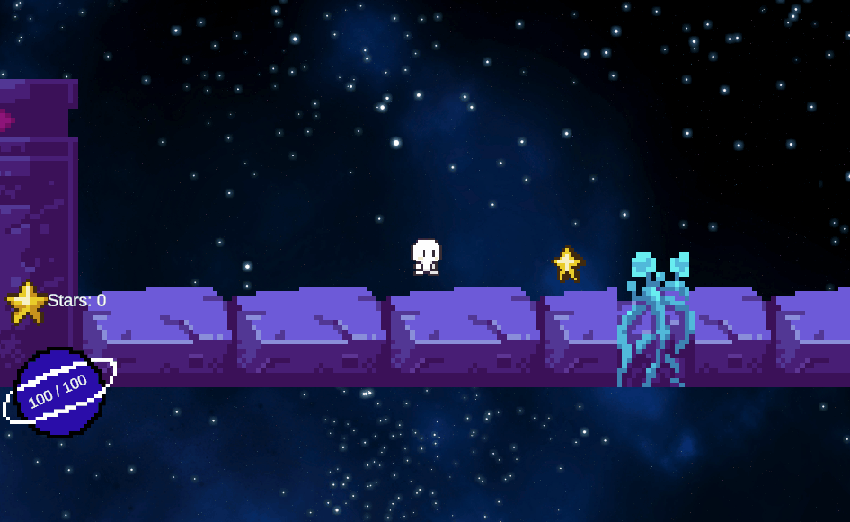
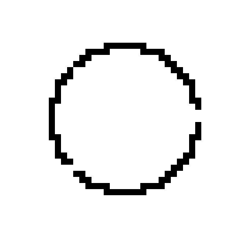
Healthbar - Level 2In Level 2 heb ik hetzelfde healthbar-systeem hergebruikt als in Level 1. Het verschil is dat de healthbar nu de vorm van een planeet heeft, passend bij het space-thema. Daarnaast heb ik via de Unity Inspector de Fill-instellingen aangepast. Hierdoor loopt de healthbar van boven naar beneden leeg in plaats van van links naar rechts. De bestaande C#-scripts hoefde ik hiervoor niet aan te passen.
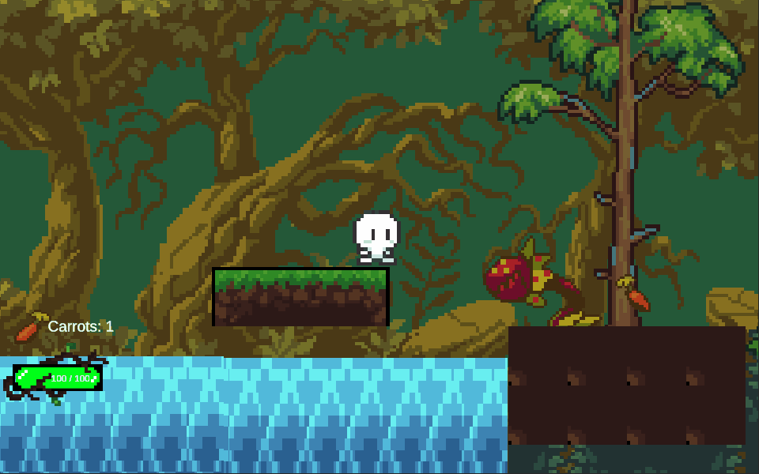
In Level 3 heb ik dezelfde healthbar gebruikt als in Level 1, zowel qua vormgeving als werking. De healthbar loopt van links naar rechts leeg wanneer de speler schade krijgt. Omdat het bestaande systeem goed werkte, heb ik geen aanpassingen aan de scripts hoeven maken.